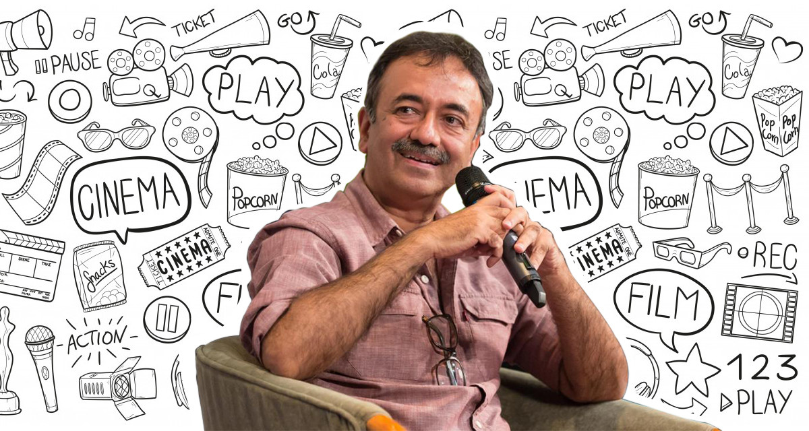
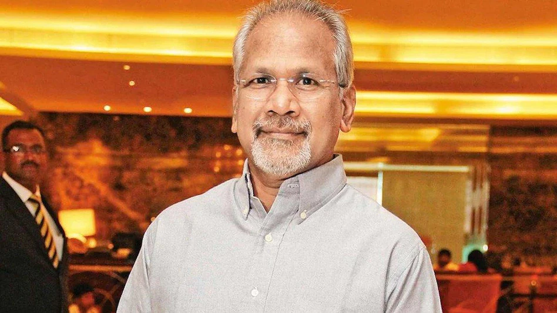

TOP DIRECTORES IN INDIA
Introduction to Film Direction:
Film direction is the art of guiding and controlling the creative aspects of a film, including visual storytelling, performances, sound, and the overall mood. Directors are the visionaries who translate a script into moving images, making crucial decisions about casting, cinematography, lighting, and editing. They collaborate closely with the crew and actors, guiding each element to create a coherent, impactful story. A director’s style, choices, and interpretations play a defining role in how a story resonates with its audience.
Indian Direction and Its Growth:
Indian cinema has seen an extraordinary evolution in direction styles and techniques over the years. Traditionally known for its vibrant colors, emotional intensity, and song-and-dance sequences, Indian direction has expanded to encompass a wide range of genres, themes, and storytelling approaches. Indian directors today are incorporating advanced cinematography, realistic storytelling, and complex characters, enhancing both the quality and global appeal of Indian films.
Why Indian Direction Is So Good Nowadays
- Innovative Storytelling:
- Modern Indian directors are taking on unique and complex narratives, exploring societal issues, mental health, historical events, and individual identity. Filmmakers like Anurag Kashyap, R. Balki, and Meghna Gulzar are pushing traditional boundaries, creating compelling, meaningful stories.
- Emphasis on Realism:
- There is a growing trend toward realism in Indian cinema. Directors are moving away from over-the-top drama and focusing on authentic, grounded stories. Films like Article 15, Piku, and Masaan reflect real societal issues, resonating with both Indian and global audiences.
- Technical Advancements:
- Indian cinema has seen significant improvements in technology, from VFX to cinematography and sound design. Directors like SS Rajamouli (Baahubali, RRR) and Ayan Mukerji (Brahmāstra) have used cutting-edge visual effects, putting Indian films on par with global standards.
- Global Recognition and Inspiration:
- With international streaming platforms and the popularity of Indian films abroad, Indian directors are exposed to global styles and are inspired to incorporate these into their work. Many recent films have received international awards, elevating the credibility of Indian directors and making them eager to match or exceed global standards.
In essence, Indian direction has become a powerful force, evolving with a keen focus on artistic quality, innovative storytelling, and technical prowess. This progression is why Indian cinema is so celebrated globally today.
Top 5 Directors in India
- SS Rajamouli
- Rajkumar Hirani
- Sanjay Leela Bhansali
- Mani Ratnam
- Anurag Kashyap
SS Rajamouli
- Notable Works:
- Baahubali series, RRR, Eega
-
- Style and Impact:
- Rajamouli is known for his grand storytelling, visual spectacle, and revolutionary use of VFX. His films have achieved massive success globally, bringing international acclaim to Indian cinema.
 twitter handle
twitter handle
Rajkumar Hirani
- Notable Works:
- Munna Bhai M.B.B.S., 3 Idiots, PK, Sanju
-
- Style and Impact:
- Known for blending humor with social themes, Hirani creates relatable stories that touch on important societal issues. His films are some of the highest-grossing in Indian cinema.

twitter handle
Sanjay Leela Bhansali
- Notable Works:
- Devdas, Bajirao Mastani, Padmaavat, Gangubai Kathiawadi
-
- Style and Impact:
- Bhansali is famous for his opulent sets, rich color palettes, and historical storytelling. His cinematic style is distinct, making his films a visual treat, often compared to epic paintings in motion.
 twitter handle
twitter handle
Mani Ratnam
- Notable Works:
- Roja, Bombay, Dil Se, Ponniyin Selvan
-
- Style and Impact:
- A master storyteller, Ratnam is known for his intense storytelling, complex characters, and socially relevant themes. His influence spans generations, and his films have had a lasting impact on Indian cinema.

twitter handle
Anurag Kashyap
- Notable Works:
- Gangs of Wasseypur, Black Friday, Dev.D, Manmarziyaan
-
- Style and Impact:
- Kashyap is known for his gritty realism and raw storytelling. He brings unconventional themes to the forefront, and his films often challenge societal norms, establishing him as a pioneer in India’s independent cinema.
 twitter handle
twitter handle
THANK YOU